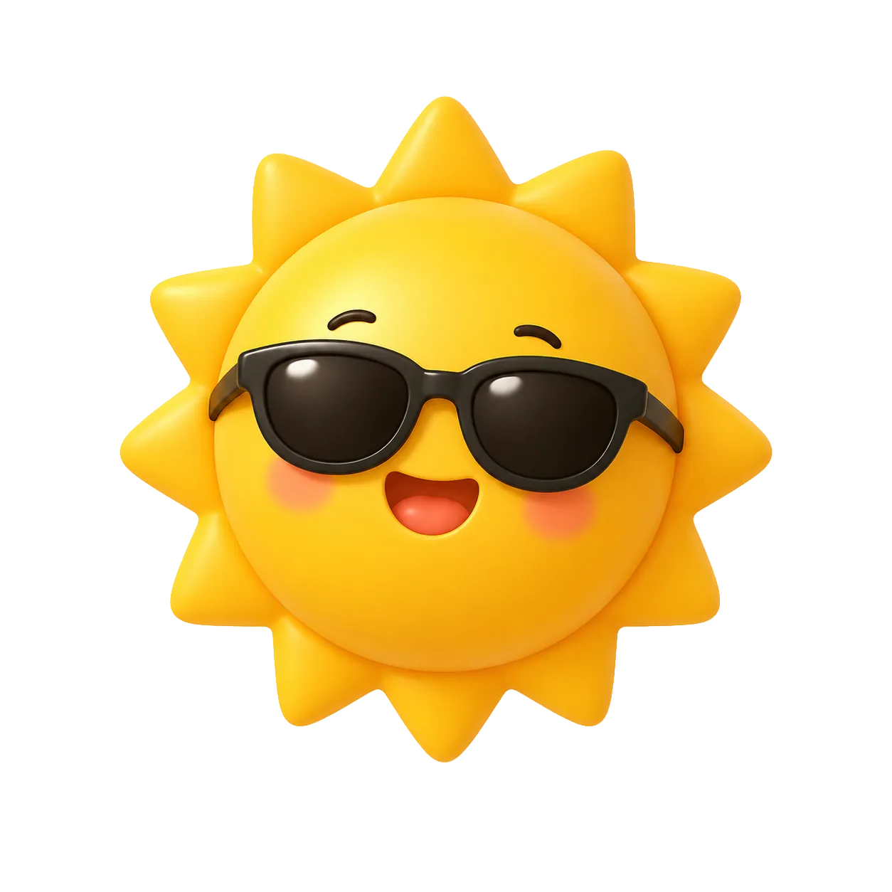
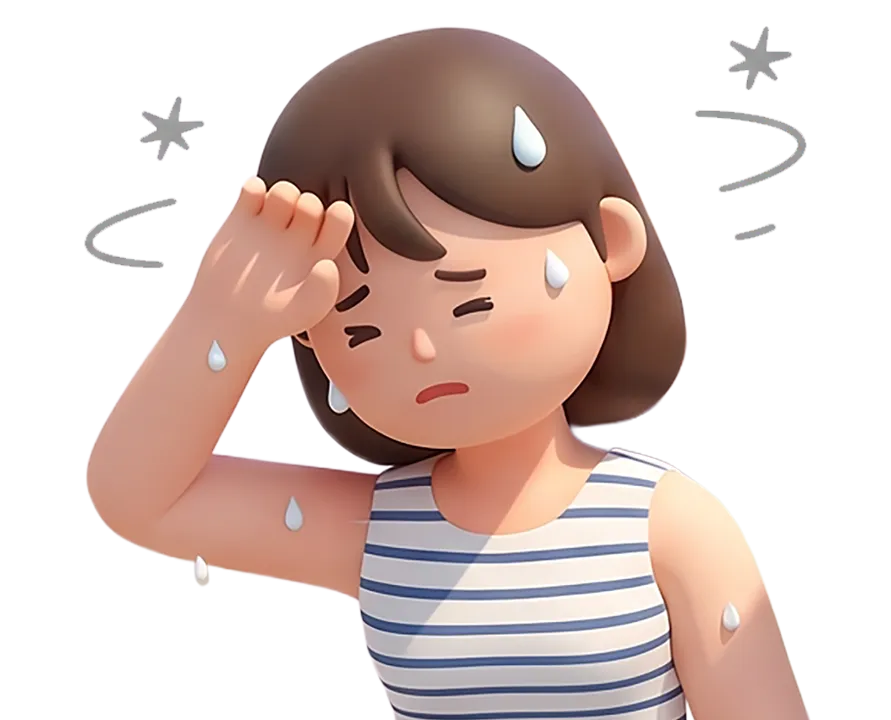
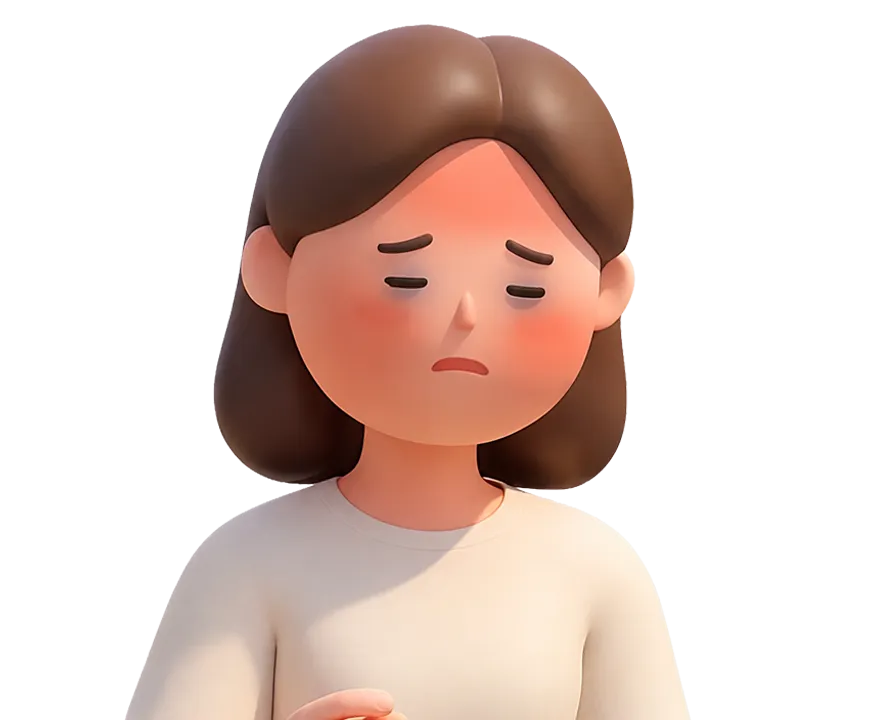
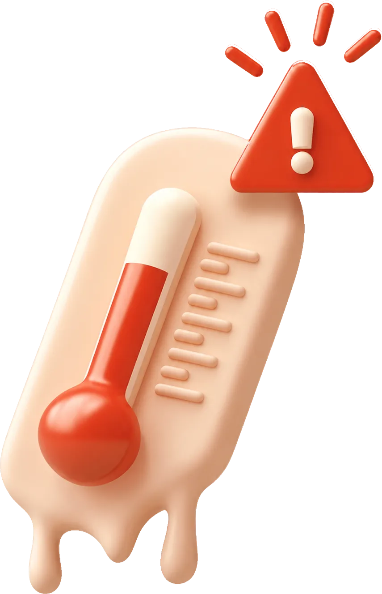

특별시민 안전가이드 <여름> 편
매년 역대급 더위라지만 올해는 진짜 역대급입니다. 해와 바람 중 나그네의 옷을 벗긴 건 뜨거운 해였다는 걸 기억하세요. 더위는 피하는 게 최선이니까요. 특별시민을 위한 특별한 여름 안전 가이드를 준비했어요.

01온열질환 주의
막연하게 ‘여름이라 덥다’고 하기엔 그 기세가 심상치 않습니다. 야외 온열질환자 발생 추이도 심상치 않아요. ‘여름인데 밖이 더운 건 당연하지’라고 생각할 수도 있지만, 이렇게까지 덥다면 더더욱 실외에선 조심해야 해요.
2026 온열질환 발생 장소
2026.05.15 ~ 07.2626.5.15 ~ 7.26
02폭염특보 개편
무려 18년 만의 개편이에요. 주의보와 경보 두 단계였던 폭염특보에 최상위 단계인 ‘폭염중대경보’가 추가되었습니다. 또 밤 기온을 기준으로 하는 ‘열대야주의보’도 신설되었어요.
폭염특보는 기온이 아니라 체감온도로 발효합니다. 체감온도는 기온과 바람, 일사량을 반영하는데요. 기온이 높지 않아도 습한 날이면 체감온도는 더 높아져요. 온도계 숫자보다 특보를 믿어야 하는 이유가 여기 있어요. ‘기온이 33도네, 이 정도면 괜찮지’가 아니라 33도에도 체감온도는 훨씬 높을 수 있어요.
모든 폭염 가이드가 공통적으로 말하는 건 중단, 이동, 확인 이 세 가지예요. 기억하세요. 더위는 이기는 게 아니라 더위를 피해서 중단하고, 이동하고, 확인해야 한다는 걸.
03더위가 피해 갈 여름 생활 가이드

초기 어지럼증, 두통, 메스꺼움, 근육경련, 평소보다 많은 땀
응급 의식 저하,몸에 이상이 느껴진다면 위급상황이 오기 전에 조치해야 합니다. 무엇보다 땀이 멎는 게 가장 위험해요. 시원해진 게 아니라 몸의 체온 조절이 무너졌다는 신호거든요.
04장소별 대응
온열질환의 81.8%는 실외에서 발생합니다.
발생이 잦은 곳부터 대응 수칙을 확인하세요.

체감온도가 높은 날은 2시간 이내마다 20분 이상 휴식을 제공해야 합니다.
* 사업주의 보건조치 의무
오전 10시부터 오후 5시까지 야외작업을 중단하세요.
교차로 그늘막, 쿨링포그, 무더위쉼터를 이용하세요.
한여름 야외 주차된 차 안이라면 더더욱 주의가 필요해요.
폭염 시 야외 주차 안전수칙낮 동안은 커튼 등으로 햇볕을 막고, 냉방이 여의찮으면 가까운 무더위쉼터를 이용하세요.
05광주특별시 폭염에 총력 대응 중
8월 3일 전남광주통합특별시가 지역재난안전대책본부를 비상 2단계로 격상했어요. 비상 1단계를 발동한 지 1주일 만인데요. 일부 지역의 체감온도는 38도를 넘어서며 폭염은 정부와 지자체가 앞서서 대응해야 할 재난이 되었어요.
광주특별시에는 1만여 곳의 무더위쉼터가 있어요. 나와 가까운 무더위쉼터도 쉽게 검색 가능합니다. 이동노동자를 위한 쉼터도 따로 마련되어 있어요.
내 주변 무더위 쉼터 찾기 (안전지도대피시설무더위쉼터)지역 동네별 폭염 위험도를 상세하게 확인할 수 있는 폭염정보 통합서비스를 시작했어요. 상세 열분포, 행정동 단위 폭염 취약지도, 무더위쉼터, 그늘막 위치 정보를 제공해요. 폭염정보를 한눈에 보는 광주특별시의 폭염정보 포털이랍니다.
폭염정보 통합서비스 바로가기에너지바우처 사용방법이 변경되었어요. 이젠 하절기·동절기 구분 없이 사용기간 내 자유롭게 사용 가능합니다.
폭염중대경보가 발효되면 전남광주통합특별시 발주 151개 관급공사 현장은 긴급조치 외에 모든 옥외 작업을 중지해야 합니다. 민간 사업장에도 같은 조치를 권고했어요.
폐지수집 어르신들이 무더위에서 위험한 노동을 하지 않도록 폐지수집 대신 대체 일자리를 제공해요. 물론 수당도 지원합니다.
농업
현장활동반 영농작업장 예찰,
농업용수 가뭄대책 상황실 운영
축산
폭염 취약 축산농가 공무원 1:1 담당제 운영, 7개 사업 218억 원 지원, 소방서·축협 협력 급수 지원
수산
수온관측 시스템 120개소 운영, 이상수온 대응 국비 8억 700만원 추가 확보, 액화산소·면역증강제 보급
염전 노동자 보호
고용노동부·해양수산부·경찰청과 노동권 보호 업무협약 체결
더위는 이기는 게 아니라
피해야 해요
중단하고, 이동하고, 확인하세요